Contents
- Manual Point Correspondence using various points around the image, as well as a user-specified point.
- Load source image
- Display Images
- Detect Head Locations in All Images
- Select Points of Interest (POIs)
- Match point using L2-norm on patch and relative position to head
- Display Images with Top-N matching patches
%
Manual Point Correspondence using various points around the image, as well as a user-specified point.
Experiment to test if we can manually select one point for correspondence and then find the matching correspondences across a set of images. This is an extension of ManualPoint_TimeLapse which uses not only the patch around the user-specified point, but other areas in the image that are fairly invariant, such as the position of the head or body edges. What we use is left to be explored.
Steps: 1) Given N images, the user selects a point of interest on 1 image 2) Extract local patch, and some far-away global patches 3) Scan across a candidate image and try to find the M best matching points. 4) Display the M points
clc clear all close all
Load source image
img_source = '/media/esteva/ExtraDrive1/ThrunResearch/NikonD3Data/4-9-2015/DSC_7971.JPG'; % Source resize = @(x) imresize(x, 0.1); rotate90 = @(x) imrotate(x, 90); % img_source = imrotate(imresize(imread(img_source), 0.1), 90); img_source = rotate90(resize(imread(img_source))); % Load target images imgs = { '/media/esteva/ExtraDrive1/ThrunResearch/NikonD3Data/4-9-2015/DSC_7983.JPG' % Target 1 '/media/esteva/ExtraDrive1/ThrunResearch/NikonD3Data/4-11-2015/DSC_7987.JPG' '/media/esteva/ExtraDrive1/ThrunResearch/NikonD3Data/4-6-2015/DSC_7947.JPG' '/media/esteva/ExtraDrive1/ThrunResearch/NikonD3Data/4-1-2015/DSC_7899.JPG' '/media/esteva/ExtraDrive1/ThrunResearch/NikonD3Data/4-6-2015/DSC_7946.JPG' }; imgs = cellfun(@imread, imgs, 'UniformOutput', false); imgs = cellfun(resize, imgs, 'UniformOutput', false); imgs = cellfun(rotate90, imgs, 'UniformOutput', false);
Display Images
figure; imshow(img_source) % image number 1 title('Source Image') for m = 1:length(imgs) figure; imshow(imgs{m}) title(['Target Image ' num2str(m)]); end pause(0.5);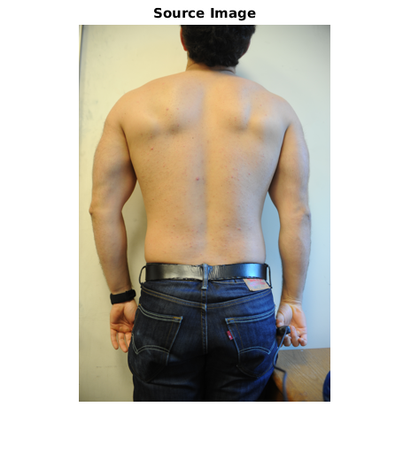 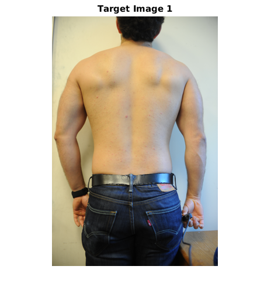 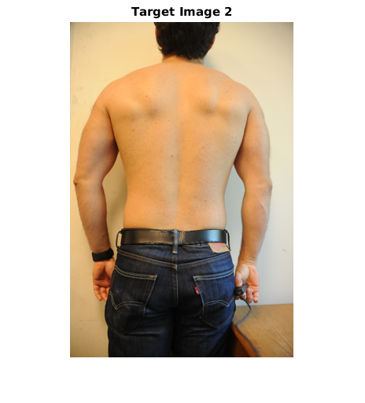 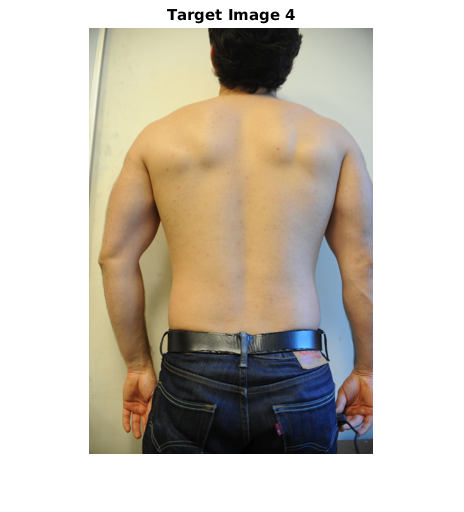 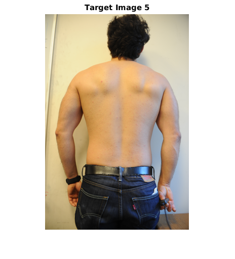
Detect Head Locations in All Images
hypothesis: We can use the center of a person's head as a landmark around which to navigate It is relatively invariant to the position of marks on a person's back or front. The challenge will be in arm marks. For this we may need to use a person's shoulder and hands as the landmarks to be used
spoi = @(x) selectPointOnImage(x, 'Select Center of Head'); head_source = spoi(img_source); head_targets = cellfun(spoi, imgs, 'UniformOutput', false); pause(0.3);
Select Points of Interest (POIs)
points = [
175.1870 135.0737 % Red1
141.4311 83.0895 % Red2
95.8605 100.9802 % Red3
210.9683 34.1434 % Left Elbow
214.0063 246.1307 % Right Elbow
];
% Manual Selection
% point = selectPointOnImage(img_source, 'Source Image: Select point of interest');
% pause(0.3);
for p = 1:size(points,1)
point = points(p, :);
Match point using L2-norm on patch and relative position to head
the epicenter is the point found by taking the location vector of the source and adding it to the head-center point of the targets the location vector is defined as the vector pointing from the head-center to the POI in the source (Currently only uses L2 norm)
display('Scanning'); % Get source patch patch_width = 50; % Make this an even number so that in patch there is a center column/row for flipping later (think of convolutions) patch_height = 50; patch = getPatches(point, patch_width, patch_height, img_source); [patch_height, patch_width,~] = size(patch); imgPt2HmapPt = @(pt) pt - [patch_height/2, patch_width/2]; % Grayscale conversion I1 = rgb2gray(img_source); imgs_gray = cellfun(@rgb2gray, imgs, 'UniformOutput', false); patch_gray = rgb2gray(patch); % L2-norm scanning -> Heatmap of most similar patches func = @(X) scan(patch_gray,X); hmaps = cellfun(func, imgs_gray, 'UniformOutput', false); % Constrain Heatmap by regional minima hmaps = cellfun(@constrainHeatmap, hmaps, 'UniformOutput', false); % Regularization: Weight each matched point by its radial distance from the epicenter display('Regularizing'); findEpicenter = @(head_img) (point - head_source) + head_img; epicenters = cellfun(findEpicenter, head_targets, 'UniformOutput', false); hmaps0 = {}; for i = 1:length(imgs) epicenter = imgPt2HmapPt(epicenters{i}); x0 = epicenter(2); y0 = epicenter(1); [ygv, xgv, ~] = size(hmaps{i}); [X,Y] = meshgrid(1:xgv, 1:ygv); reg = 1 * ((X-x0).^2 + (Y-y0).^2); %L2 distance reg % reg = 1.0 * (abs(X-x0) + abs(Y-y0)); %L1 distance reg hmaps0{i} = reg + hmaps{i}; end hmaps = hmaps0; % Calculate matches in ascending order func = @(X) sort(X(:), 1, 'ascend'); [l2norms, I] = cellfun(func, hmaps, 'UniformOutput', false); display('Patches Extracted')
Scanning Regularizing Patches Extracted
Scanning Regularizing Patches Extracted
Scanning Regularizing Patches Extracted
Scanning Regularizing Patches Extracted
Scanning Regularizing Patches Extracted
Display Images with Top-N matching patches
% Number of patches to display N=3; % Display Source Image with Desired Patch f = figure; colour = uint8([255 0 0 ]); % [R G B]; class of colour must match class of I rectangle = int32([point(2:-1:1) - [patch_width/2 patch_height/2], patch_width, patch_height]); shapeInserter = vision.ShapeInserter('BorderColor','Custom','CustomBorderColor',colour); J = step(shapeInserter, img_source, rectangle); imshow(J); title('Source Image & Desired Point') % Display Target Images with Top-N Patches numimgs = length(imgs)+1; for i = 1:numimgs-1 %Overlay Epicenter on copy of img i epicenter = epicenters{i}; shapeInserter = vision.ShapeInserter('Shape','Circles','BorderColor','Custom','CustomBorderColor',uint8([0 0 255])); circ = int32([epicenter(2) epicenter(1) 10]); % [x1 y1 radius1] J = step(shapeInserter, imgs{i}, circ); %Overlay Top-N Patches as bounding boxes - cyan is #1, white are the rest for j = 1:N % Extract jth correspondence point pf_hampr= [mod(I{i}(j), size(hmaps{i},1)), floor( I{i}(j) / size(hmaps{i},1) )]; pf = round(pf_hampr + size(patch_gray)/2); % First correspondence is cyan, the rest are white if(j == 1) colour = uint8([0 255 255]); % [R G B]; class of colour must match class of I else colour = uint8([255 255 255]); % [R G B]; class of colour must match class of I end % Overlay Rectangle of specified color rectangle = int32([pf(2:-1:1) - [patch_width/2 patch_height/2], patch_width, patch_height]); shapeInserter = vision.ShapeInserter('BorderColor','Custom','CustomBorderColor',colour); J = step(shapeInserter, J, rectangle); end % Display figure; imshow(J); title(['Target Image ' num2str(i) ' - Top ' num2str(N) ' matches']); end


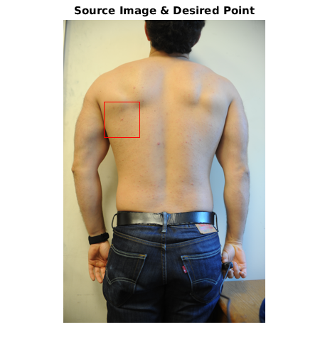 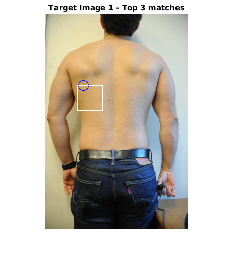 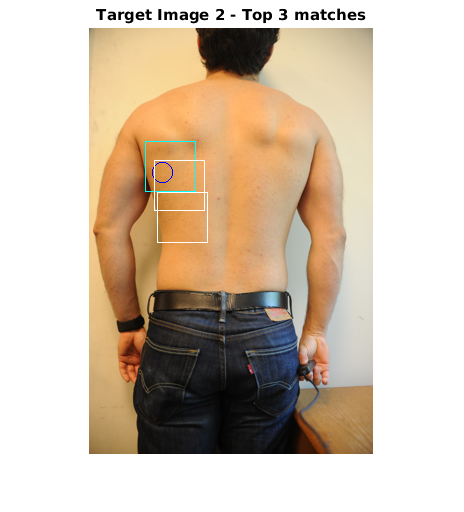
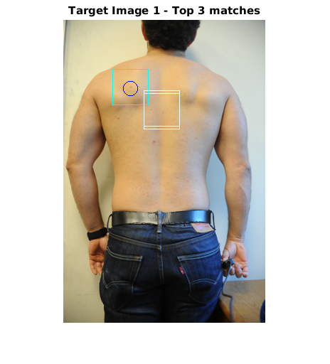 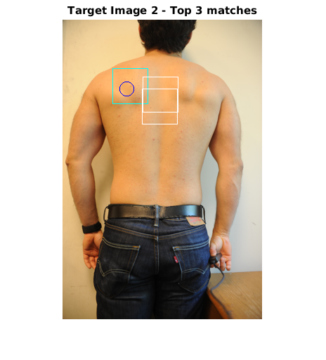
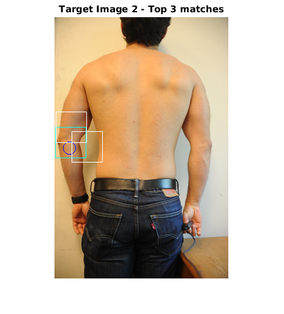 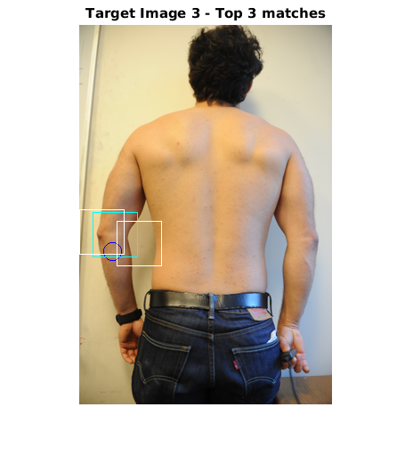
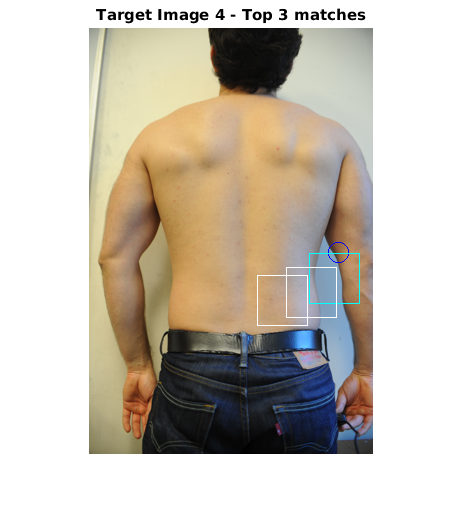
end